A prototype iOS app that helps DC commuters plan, save, and navigate public transit journeys — my first-ever UX case study, from a 6-month Springboard bootcamp project.
Skip to work ▸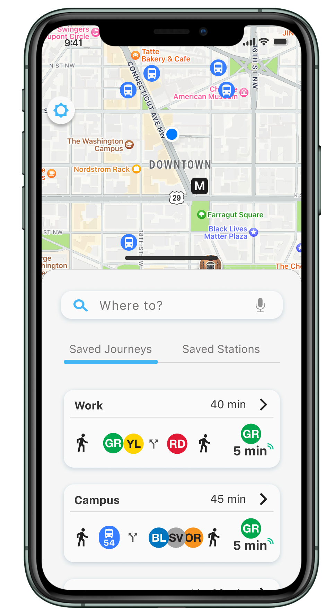
7 interviews. 1 metro station. A lot of sticky notes.
I recruited most of my 7 interview participants old-school — flyering my local metro stop during rush hour, gift card in hand. Turns out $15 to Amazon goes a long way when someone's just trying to catch a train.
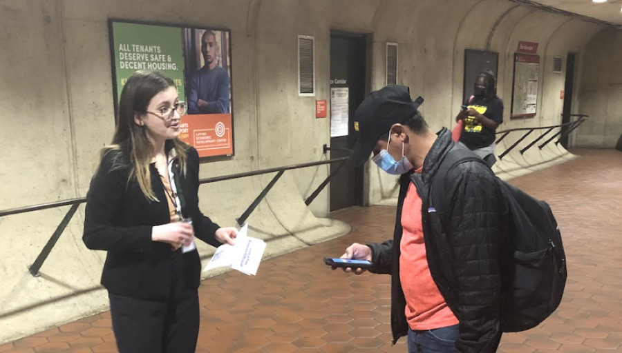
3.5 hours of interview recordings and 18 pages of notes, sorted onto a wall by hand. Planning kept coming up more than mapping — people already knew how to get somewhere, they just didn't know the best time to leave.
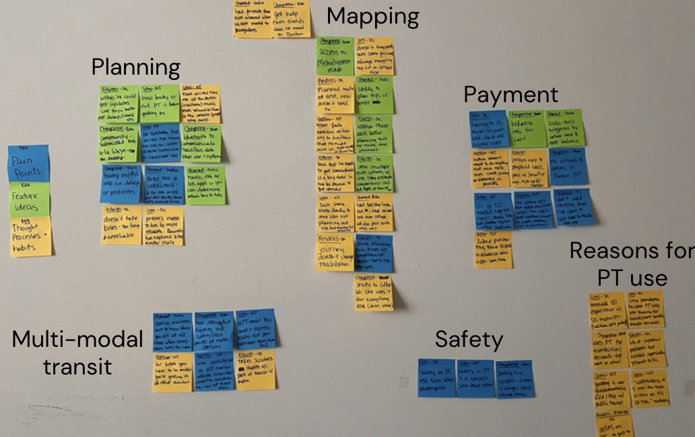
From the 7 people I talked to, I built 3 personas — John, Leslie, and Hayden — to represent frequent high-stakes riders, frequent low-stakes riders, and suburban commuters.
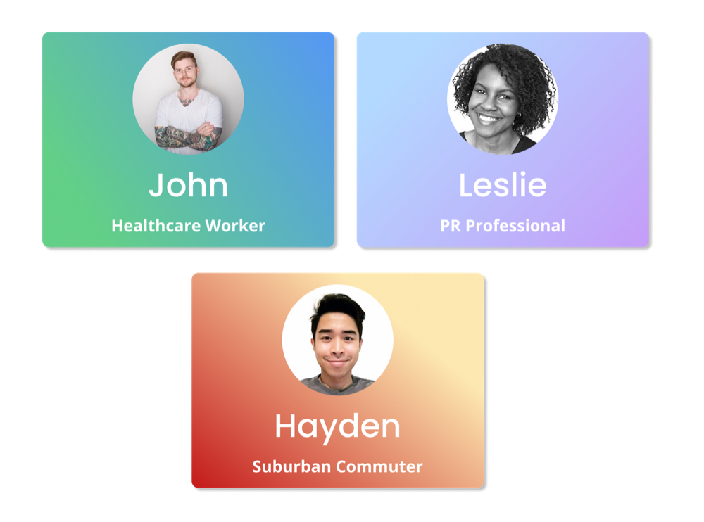
From paper to a working style guide, fast.
The very first sketches — working out the core screens (saved stations, saved journeys, creating a new journey) with pencil and a notebook, before touching Figma.
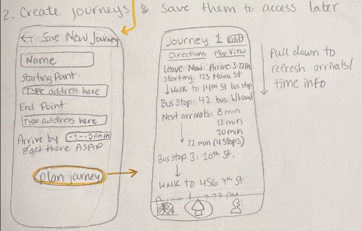
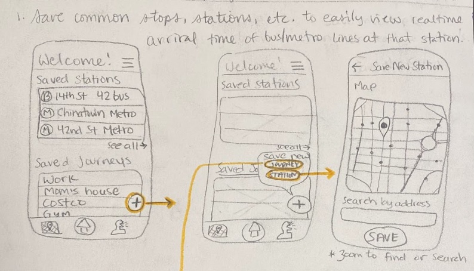
A second pass on grid paper, tightening the navigation and mapping out how each screen actually connects to the next.
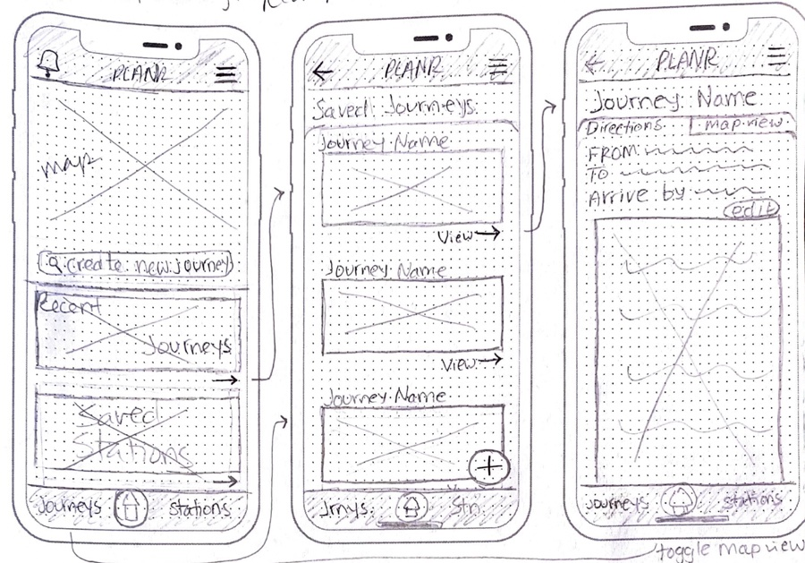
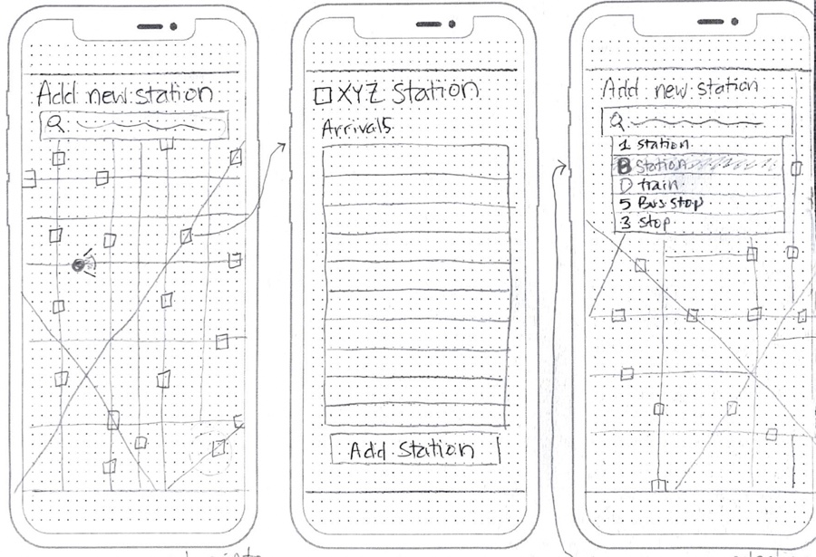
Once the core flows felt right on paper, I rebuilt them in Figma — same structure, now testable and shareable.
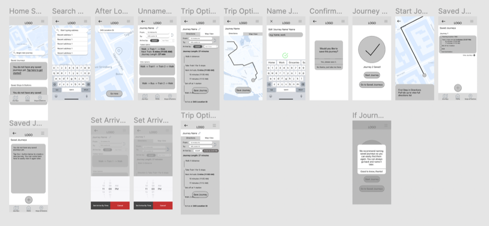
A simple color, type, and icon system kept the hi-fi screens consistent as I moved fast through iterations.
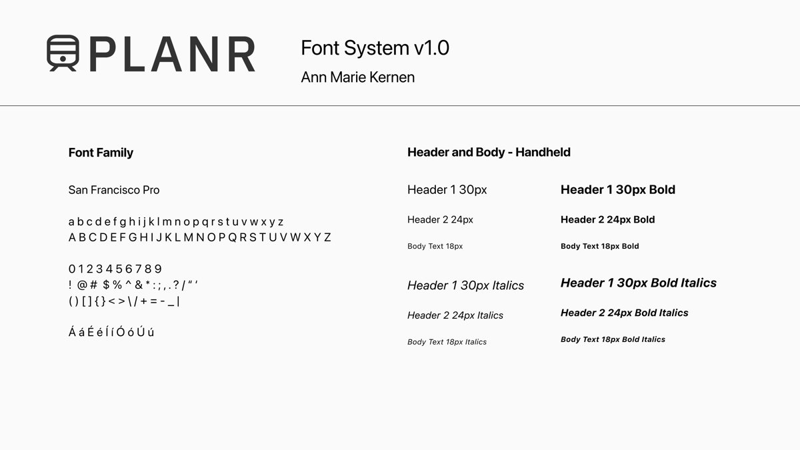
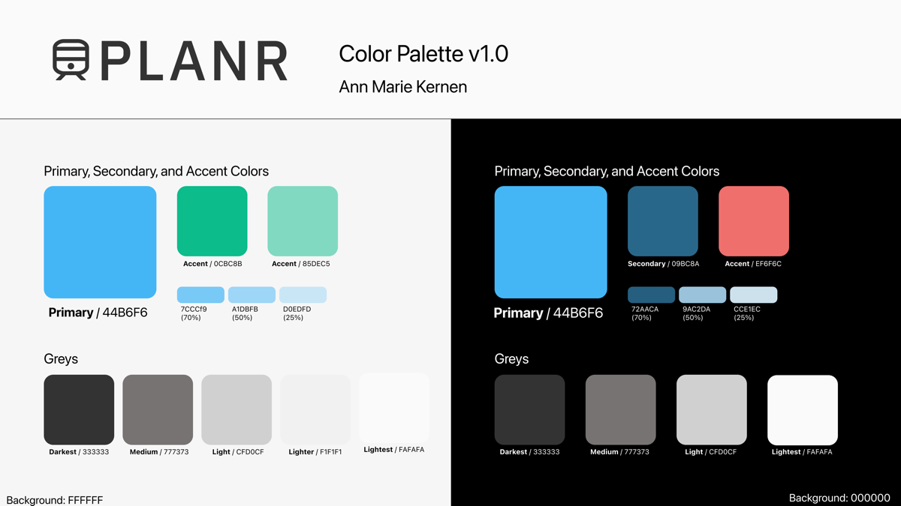
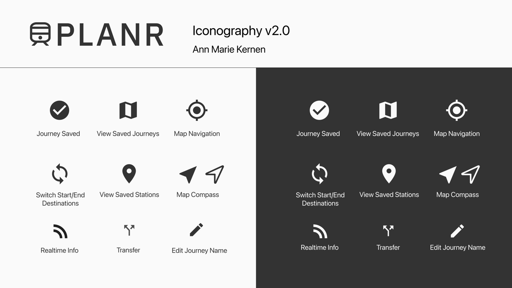
Before jumping into hi-fi screens, I mapped three core "red routes" — plan a journey, save a station, check saved journeys — screen by screen, to make sure the flows actually held together.
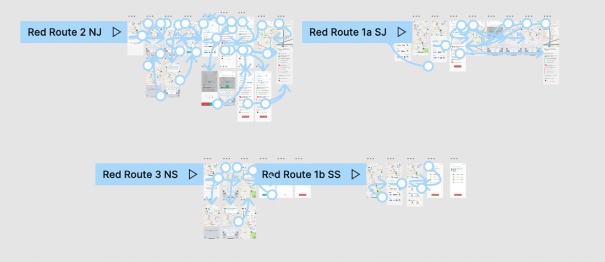
Four core screens, from planning to riding.
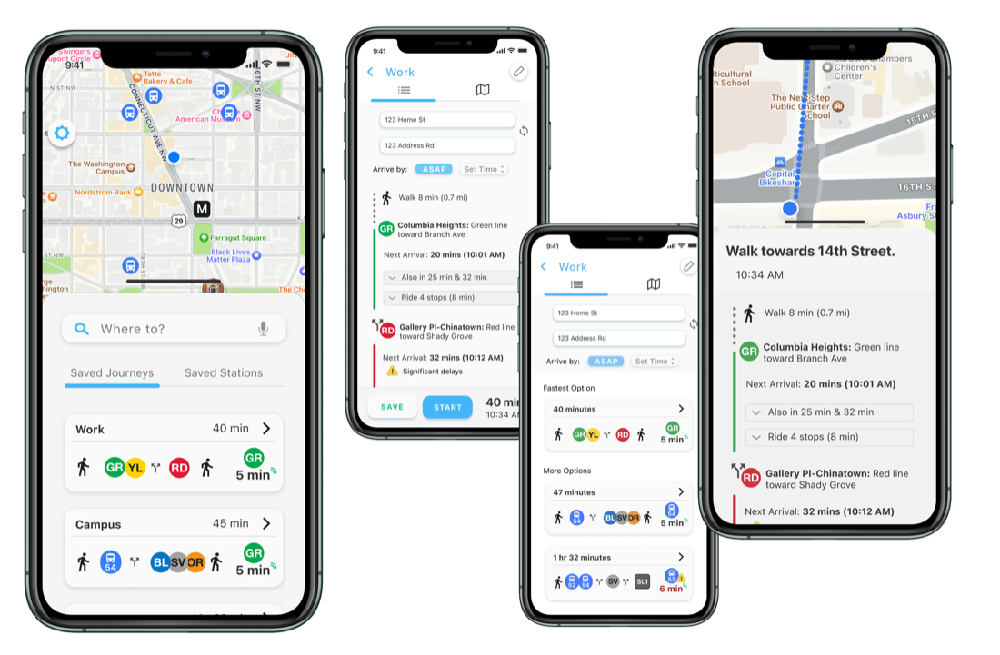
On the final MVP prototype, users hit a 96% success rate in unmoderated testing (Maze, n=26). It was my first time designing an end-to-end product, start to finish — and it's still the project that taught me the most.